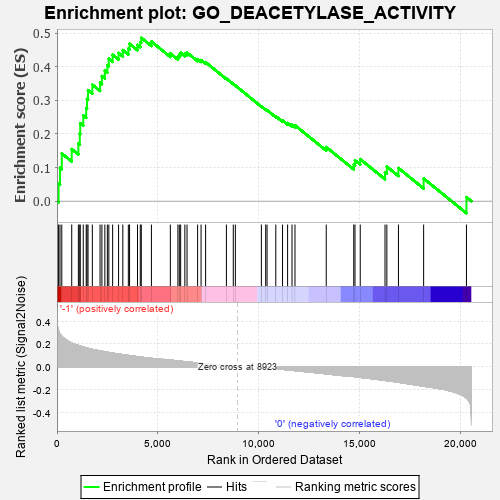

| | | Dataset | GSEAExpression.phenotype_uvm.cls#-1_versus_0 |
| Phenotype | phenotype_uvm.cls#-1_versus_0 |
| Upregulated in class | -1 |
| GeneSet | GO_DEACETYLASE_ACTIVITY |
| Enrichment Score (ES) | 0.48670152 |
| Normalized Enrichment Score (NES) | 1.9047531 |
| Nominal p-value | 0.0019646366 |
| FDR q-value | 0.24833801 |
| FWER p-Value | 0.543 |
Table: GSEA Results Summary

Fig 1: Enrichment plot: GO_DEACETYLASE_ACTIVITY
Profile of the Running ES Score & Positions of GeneSet Members on the Rank Ordered List
| PROBE | DESCRIPTION
(from dataset) | GENE SYMBOL | GENE_TITLE | RANK IN GENE LIST | RANK METRIC SCORE | RUNNING ES | CORE ENRICHMENT | | 1 | CHD4 | na | | | 78 | 0.316 | 0.0520 | Yes |
| 2 | NDST2 | na | | | 148 | 0.286 | 0.0992 | Yes |
| 3 | HDAC5 | na | | | 237 | 0.268 | 0.1421 | Yes |
| 4 | HDAC3 | na | | | 729 | 0.209 | 0.1549 | Yes |
| 5 | SIRT2 | na | | | 1059 | 0.187 | 0.1718 | Yes |
| 6 | HDAC1 | na | | | 1128 | 0.183 | 0.2008 | Yes |
| 7 | HDAC9 | na | | | 1149 | 0.182 | 0.2319 | Yes |
| 8 | HDAC6 | na | | | 1300 | 0.173 | 0.2551 | Yes |
| 9 | RBBP4 | na | | | 1446 | 0.166 | 0.2773 | Yes |
| 10 | HDAC7 | na | | | 1486 | 0.164 | 0.3043 | Yes |
| 11 | MTA2 | na | | | 1537 | 0.162 | 0.3304 | Yes |
| 12 | SIN3A | na | | | 1750 | 0.153 | 0.3469 | Yes |
| 13 | SAP30 | na | | | 2132 | 0.140 | 0.3530 | Yes |
| 14 | RCOR1 | na | | | 2224 | 0.136 | 0.3726 | Yes |
| 15 | ARID4B | na | | | 2370 | 0.132 | 0.3888 | Yes |
| 16 | RBBP7 | na | | | 2494 | 0.128 | 0.4053 | Yes |
| 17 | CES2 | na | | | 2567 | 0.126 | 0.4240 | Yes |
| 18 | NACC2 | na | | | 2755 | 0.120 | 0.4360 | Yes |
| 19 | SIN3B | na | | | 3049 | 0.112 | 0.4415 | Yes |
| 20 | SUDS3 | na | | | 3260 | 0.107 | 0.4500 | Yes |
| 21 | PHF21A | na | | | 3533 | 0.100 | 0.4544 | Yes |
| 22 | SIRT1 | na | | | 3594 | 0.098 | 0.4688 | Yes |
| 23 | BRMS1L | na | | | 3987 | 0.089 | 0.4655 | Yes |
| 24 | REST | na | | | 4124 | 0.087 | 0.4741 | Yes |
| 25 | HMG20B | na | | | 4175 | 0.085 | 0.4867 | Yes |
| 26 | SIRT7 | na | | | 4676 | 0.075 | 0.4754 | No |
| 27 | NDST1 | na | | | 5614 | 0.059 | 0.4401 | No |
| 28 | SIRT6 | na | | | 5988 | 0.052 | 0.4310 | No |
| 29 | HDAC11 | na | | | 6058 | 0.051 | 0.4366 | No |
| 30 | PIGL | na | | | 6124 | 0.049 | 0.4421 | No |
| 31 | HDAC8 | na | | | 6332 | 0.046 | 0.4400 | No |
| 32 | HDAC10 | na | | | 6440 | 0.043 | 0.4425 | No |
| 33 | KDM1A | na | | | 6964 | 0.034 | 0.4229 | No |
| 34 | NDST4 | na | | | 7135 | 0.031 | 0.4201 | No |
| 35 | ARID4A | na | | | 7360 | 0.027 | 0.4139 | No |
| 36 | SAP30L | na | | | 8390 | 0.009 | 0.3652 | No |
| 37 | HDAC2 | na | | | 8730 | 0.003 | 0.3492 | No |
| 38 | CHD3 | na | | | 8833 | 0.001 | 0.3444 | No |
| 39 | MBD3 | na | | | 10122 | -0.003 | 0.2821 | No |
| 40 | SIRT3 | na | | | 10336 | -0.007 | 0.2729 | No |
| 41 | C6orf130 | na | | | 10403 | -0.008 | 0.2711 | No |
| 42 | AADAC | na | | | 10836 | -0.016 | 0.2527 | No |
| 43 | HDAC4 | na | | | 11170 | -0.022 | 0.2403 | No |
| 44 | ATXN3 | na | | | 11421 | -0.026 | 0.2326 | No |
| 45 | BRMS1 | na | | | 11639 | -0.030 | 0.2273 | No |
| 46 | SALL1 | na | | | 11786 | -0.033 | 0.2259 | No |
| 47 | AMDHD2 | na | | | 13334 | -0.061 | 0.1611 | No |
| 48 | CES1 | na | | | 14697 | -0.084 | 0.1093 | No |
| 49 | SIRT4 | na | | | 14758 | -0.085 | 0.1215 | No |
| 50 | ESD | na | | | 15018 | -0.092 | 0.1250 | No |
| 51 | MTA1 | na | | | 16245 | -0.118 | 0.0860 | No |
| 52 | MACROD1 | na | | | 16336 | -0.120 | 0.1028 | No |
| 53 | MACROD2 | na | | | 16911 | -0.135 | 0.0985 | No |
| 54 | SAP18 | na | | | 18158 | -0.169 | 0.0674 | No |
| 55 | MTA3 | na | | | 20278 | -0.271 | 0.0117 | No |
Table: GSEA details [plain text format]
Fig 2: GO_DEACETYLASE_ACTIVITY
Blue-Pink O' Gram in the Space of the Analyzed GeneSet
Fig 3: GO_DEACETYLASE_ACTIVITY: Random ES distribution
Gene set null distribution of ES for GO_DEACETYLASE_ACTIVITY